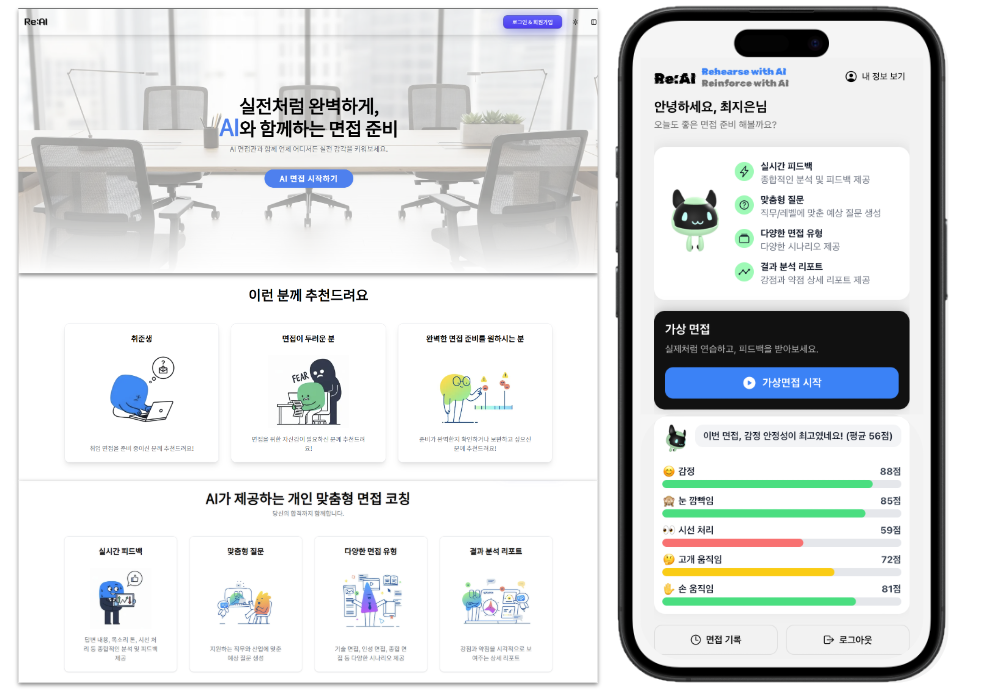

AI 모의 면접 플랫폼
6인 팀 · 2025.07.17–2025.09.12
AI를 활용해 사용자 맞춤 면접 질문을 생성하고 표정, 동작 등 상세한 분석을 통해 면접을 도와주는 플랫폼
Spring BootReactReact NativeLangGraphAWS
INTRODUCTION
ENFJ, 사람들과의 상호작용을 통해 성장하는 개발자
“업무에서 적극적으로 의견을 제시하고, 선배님들과 소통하며 끊임 없이 발전하는 모습을 보여드리겠습니다.”
머물러있지 않는 개발자
“저는 머물러 있지 않고, 더 나은 서비스와 가치를 제공하기 위해 끊임없이 도전하는 개발자입니다. 어제보다 더 성장하고 발전하기 위해 노력하며, 개발 역량뿐만 아니라 스스로를 꾸준히 단련하는 사람입니다.”
기본에 충실한 개발자
“저는 탄탄한 기본기를 바탕으로 문제를 정확히 이해하고 해결하는 데 집중하는 개발자입니다. 기본에 충실함으로써 신뢰할 수 있는 코드를 작성하며, 성장의 토대를 단단히 다지기 위해 최선을 다합니다.”

학력
2025.02 안양대학교 졸업
정보전자전기학과(정보트랙) · 소프트웨어학과(복수전공)
4.22
평균 학점(4.5 기준)
수상내역
대외활동
자격(면허)증
카드를 눌러 상세를 보세요. 기본은 2열 그리드이고, "자세히 보기"는 팝업으로 표시됩니다.